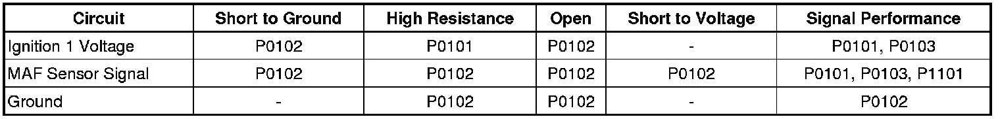
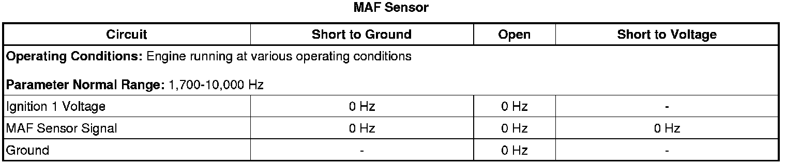
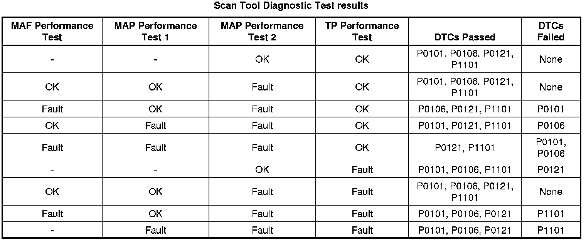

P0101
DTC P0101 or P1101
Diagnostic Instructions
* Perform the Diagnostic System Check - Vehicle (Initial Inspection and Diagnostic Overview) prior to using this diagnostic procedure.
* Review Strategy Based Diagnosis (Initial Inspection and Diagnostic Overview) for an overview of the diagnostic approach.
* Diagnostic Procedure Instructions (Initial Inspection and Diagnostic Overview) provides an overview of each diagnostic category.
DTC Descriptors
DTC P0101
- Mass Air Flow (MAF) Sensor Performance
DTC P1101
- Intake Air Flow System Performance
Diagnostic Fault Information

Typical Scan Tool Data

Circuit Description
The intake flow rationality diagnostic provides the within-range rationality check for the mass air flow (MAF), the manifold absolute pressure (MAP), and the throttle position (TP) sensors. This is an explicit model-based diagnostic containing 4 separate models for the intake system.
* The throttle model describes the flow through the throttle body, and is used to estimate the MAF through the throttle body as a function of barometric pressure (BARO), TP, intake air temperature (IAT), and estimated MAP. The information from this model is displayed on the scan tool as the MAF Performance Test parameter.
* The first intake manifold model describes the intake manifold, and is used to estimate MAP as a function of the MAF into the manifold from the throttle body, and the MAF out of the manifold caused by engine pumping. The flow into the manifold from the throttle uses the MAF estimate calculated from the above throttle model. The information from this model is displayed on the scan tool as the MAP Performance Test 1 parameter.
* The second intake manifold model is identical to the first intake manifold model except that the MAF sensor measurement is used instead of the throttle model estimate for the throttle air input. The information from this model is displayed on the scan tool as the MAP Performance Test 2 parameter.
* The fourth model is created from the combination and additional calculations of the throttle model and the first intake manifold model. The information from this model is displayed on the scan tool as the TP Performance Test parameter.
The estimates of MAF and MAP obtained from this system of models and calculations are then compared to the actual measured values from the MAF, the MAP, and the TP sensors and to each other to determine the appropriate DTC to fail. The following table illustrates the possible failure combinations and the resulting DTC or DTCs.

Conditions for Running the DTC
* DTCs P0016, P0102, P0103, P0107, P0108, P0112, P0113, P0116, P0117, P0118, P0125, P0128, P0335, P0336, P0401, P0405, P1404 are not set.
* The engine is running.
* The intake air temperature (IAT) is between -7 and +60°C (+19 and +140°F).
* The engine coolant temperature (ECT) is between 70-125°C (158-257°F).
* The DTC runs continuously when the above enabling conditions are met.
Conditions for Setting the DTC
The engine control module (ECM) detects that the actual measured airflow from the MAF, the MAP, and the TP sensors is not within range of the calculated airflow that is derived from the system of models for greater than 0.5 second.
Action Taken When the DTC Sets
DTCs P0101 and P1101 are Type B DTCs.
Conditions for Clearing the MIL/DTC
DTCs P0101 and P1101 are Type B DTCs.
Diagnostic Aids
* A steady or intermittent high resistance of 25 ohms or greater on the ignition 1 voltage circuit will cause the MAF sensor values to be increased by as much as 30 g/s.
* Depending on the current ambient temperature and the vehicle operating conditions, a MAF sensor signal circuit that is shorted to the IAT signal circuit will cause the MAF sensor signal to be skewed or erratic. Additionally it may cause a rapid fluctuation in the IAT Sensor parameter.
Reference Information
Schematic Reference
Engine Controls Schematics (Electrical Diagrams)
Connector End View Reference
Component Connector End Views (Connector Views)
Electrical Information Reference
* Circuit Testing (Component Tests and General Diagnostics)
* Connector Repairs (Component Tests and General Diagnostics)
* Testing for Intermittent Conditions and Poor Connections (Component Tests and General Diagnostics)
* Wiring Repairs (Component Tests and General Diagnostics)
Scan Tool Reference
Control Module References (Programming and Relearning) for scan tool information
DTC Type Reference
Powertrain Diagnostic Trouble Code (DTC) Type Definitions (Diagnostic Trouble Code Descriptions)
Special Tools
J 38522 Variable Signal Generator
Circuit/System Verification
1. Verify that the following DTCs are not set: P0641 or P0651.
• If any of the DTCs are set, refer to DTC P0641 or P0651 (P0641) .
2. Verify that restrictions do not exist in the exhaust system. Refer to Restricted Exhaust (Restricted Exhaust) .
3. Engine operating at idle, observe the scan tool MAF Sensor parameter. The reading should be between 1,700-3,800 Hz depending on the ECT.
4. A wide open throttle (WOT) acceleration from a stop should cause the MAF Sensor parameter on the scan tool to increase rapidly. This increase should be from 2-6 g/s at idle to greater than 180 g/s at the time of the 1-2 shift.
5. Use the scan tool and compare the MAF Sensor parameter to a known good vehicle, under various operating conditions.
6. Verify the proper operation of the ECT and IAT sensors. A skewed or stuck ECT or IAT sensor will cause the calculated models to be inaccurate and may cause this DTC to run when it should not. Refer to Temperature Versus Resistance (Temperature Versus Resistance) .
7. Verify the proper operation of the MAP sensor. A skewed MAP sensor will cause the BARO value to be inaccurate. Refer to DTC P0106 (P0106) .
8. Operate the vehicle within the Conditions for Running the DTC. You may also operate the vehicle within the conditions that you observed from the Freeze Frame/Failure Records data.
Circuit/System Testing
1. Verify the integrity of the entire air induction system by inspecting for the following conditions:
* Any damaged components
* Loose or improper installation
* An air flow restriction
* Any vacuum leaks
* Water intrusion
* In cold climates, inspect for any snow or ice buildup
* Inspect the MAF sensor element for contamination
2. Ignition OFF, disconnect the harness connector at the MAF sensor.
3. Ignition OFF for 90 seconds, test for less than 5 ohms of resistance between the ground circuit terminal B and ground.
• If greater than the specified range, test the ground circuit for an open/high resistance. If the circuit tests normal, replace the ECM.
4. Ignition ON, verify that a test lamp illuminates between the ignition circuit terminal C and ground.
• If the test lamp does not illuminate, test the ignition circuit for a short to ground or an open/high resistance.
5. Ignition ON, test for 4.8-5.2 volts between the MAF sensor signal circuit terminal A and ground.
• If less than the specified range, test the MAF sensor signal circuit for a short to ground or an open/high resistance. If the circuit tests normal, replace the ECM.
• If greater than the specified range, test the MAF sensor signal circuit for a short to voltage. If the circuit tests normal, replace the ECM.
6. Ignition OFF, connect the red lead of the J 38522 to the signal circuit terminal A at the MAF/IAT sensor harness connector. Connect the battery voltage supply to the B+, and ground the black lead.
7. Set the J 38522 signal switch to 5 volts, the Frequency switch to 5K, and the Duty Cycle switch to Normal.
8. Engine idling, observe the scan tool MAF Sensor parameter. The scan tool MAF Sensor parameter should be between 4,950-5,025 Hz.
• If the MAF Sensor parameter is not within the specified range, replace the ECM.
9. If all other circuits test normal, test or replace the MAF sensor.
Repair Instructions
Perform the Diagnostic Repair Verification (Verification Tests) after completing the diagnostic procedure.
* Engine Coolant Temperature Sensor Replacement (Service and Repair)
* Mass Airflow Sensor/Intake Air Temperature Sensor Replacement (Service and Repair)
* Control Module References (Programming and Relearning) for ECM replacement, setup, and programming